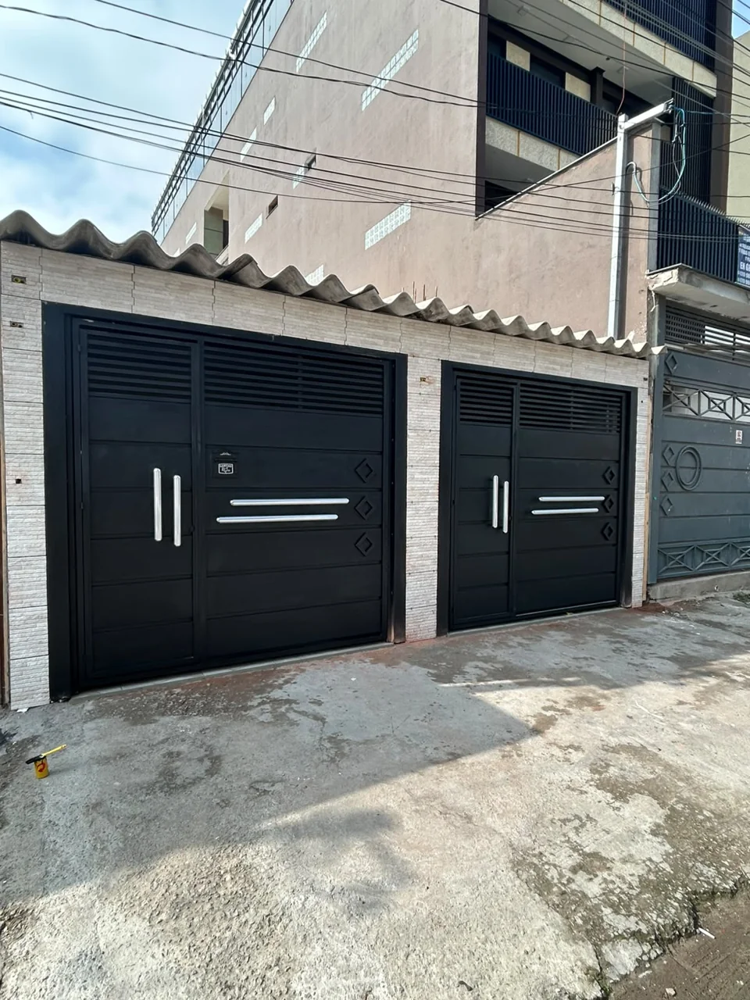

Serralheria em São Paulo e região
Infinity Serralheria
Soluções em serralheria para residências, comércios e obras.
Projetos sob medida com segurança, resistência e acabamento profissional. Do orçamento à instalação, você fala diretamente com quem executa.
O que você precisa?
Seu acesso. Sob medida.
Fabricação, automatização e manutenção. Encontre a solução para o seu imóvel e fale direto com quem executa.

01 / Fabricação
Portões sob Medida
Projetos para o seu espaço, com resistência e cuidado no acabamento.
Conhecer os modelos02 / Praticidade
Automatização
Instalação e adequação de sistemas para facilitar a entrada e a saída.
Ver automatização03 / Conservação
Manutenção
Ajustes, reparos e manutenção preventiva em portões e estruturas metálicas.
Conhecer o serviçoPortões sob medida
Um modelo para o seu projeto.
Uma seleção de portões da Infinity para você conhecer os acabamentos. Clique na foto para ampliar e peça seu orçamento.
Detalhes em losango
Orçar este modeloFrisos horizontais
Orçar este modeloPuxadores metálicos
Orçar este modeloMedidas, acabamento e condições de instalação são definidos no orçamento.
Automatização de portõesMais praticidade.
Mais praticidade.
Todos os dias.
Instalação, adequação e manutenção de automatizadores. A escolha do sistema considera o portão, o espaço e a rotina de uso do imóvel.
- Instalação de sistemas de automatização
- Adequação do portão existente
- Manutenção do sistema
Marcas de
automatizadores
ManutençãoCuidar também faz parte
Cuidar também faz parte
de um bom projeto.
Ajustes, reparos, soldas e manutenção preventiva em portões, corrimãos e estruturas. Envie uma foto e conte o que precisa de atenção.
Solicitar avaliaçãoAjustes e reparos
Correções para o funcionamento e a conservação do conjunto.
Soldas e estruturas
Reparos em componentes e estruturas metálicas.
Manutenção preventiva
Cuidados para acompanhar o desgaste do uso diário.
Portfólio real
Projetos que mostram o padrão da execução
Fotos reais dos trabalhos da Infinity. Clique em qualquer imagem para ampliar.
Obras em movimento
Execução real, sem imagem de catálogo
Uma seleção de registros feitos nas próprias obras, mostrando instalações, estruturas, acessos e sistemas em funcionamento.
- Serviços executados
- Materiais reais
- Resultados no local
Automação de portãoAbertura e fechamento do sistema instalado.
Guarda-corpos e corrimãosProteção metálica instalada em corredores e escadas.
Coberturas metálicasDetalhes da estrutura, telhas e acabamento da cobertura.
Escadas e corrimãosSoluções de proteção e circulação em ambiente comercial.
Do orçamento à entrega
Por que escolher a Infinity Serralheria?
Qualidade no acabamento
Cuidado em cada detalhe, do corte e solda à instalação final.
Segurança e resistência
Soluções pensadas para suportar o uso diário com estabilidade.
Atendimento próximo
Contato direto para entender, orientar e acompanhar seu projeto.
Onde estamos
Abrir rota no Google Maps ↗
Atendimento em São Paulo e região
A Infinity Serralheria atende residências, comércios e obras em toda a região de São Paulo.
Av. Sanatório, 697
Jardim Modelo, São Paulo - SP
Seu projeto começa aqui
EndereçoAv. Sanatório, 697, Jardim Modelo
WhatsApp(11) 96632-1556
Instagram@infinity_serralheriaa
Vamos transformar sua ideia em uma solução segura e bem executada?
Envie fotos, medidas aproximadas ou uma descrição do que precisa. A Infinity retorna diretamente pelo WhatsApp.